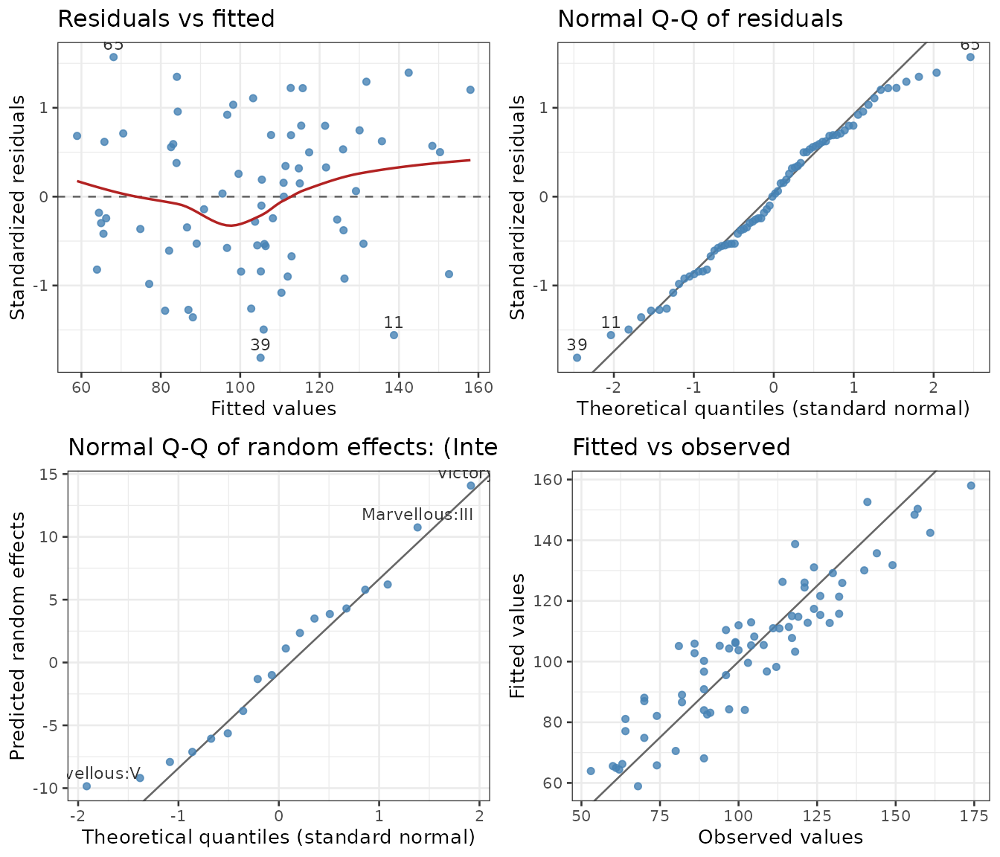
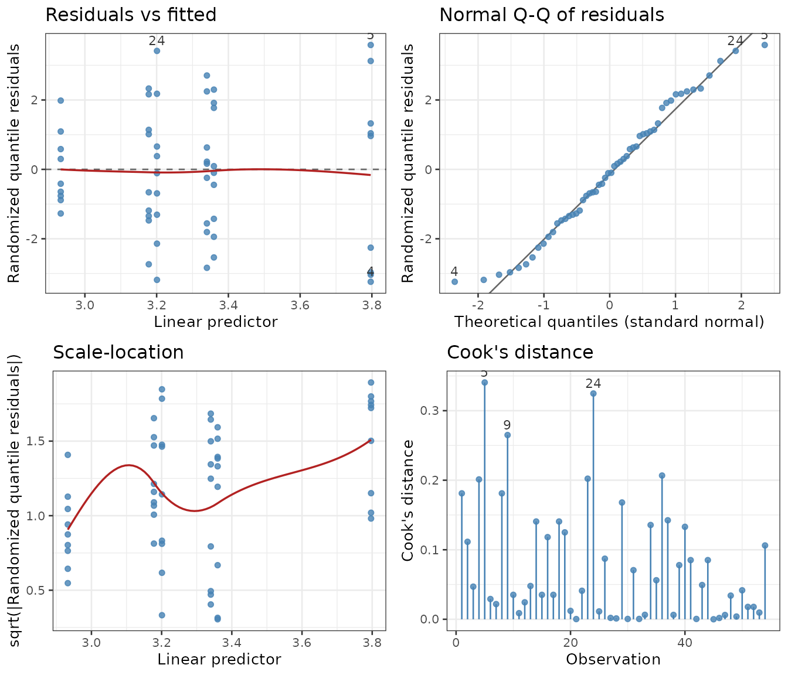

Predicted means, their standard errors and the tests are only as good as the model behind them. Before reading them, two functions help check the model:
-
pm_check(): a table of checks (outliers, influence, normality, equal variances, overdispersion, interactions, straight lines, estimability) with a plain note on each; -
residplot(): four diagnostic plots, drawn with ggplot2.
Both work for every model class that predictmeans()
handles: lm, aov (also with
Error()), glm, gls,
lme, lmer, glmer,
glmmTMB and gam.
A split plot
Yates’ oats: varieties on whole plots within blocks, nitrogen rates on sub-plots.
library(predictmeans)
Oats <- as.data.frame(nlme::Oats)
Oats$nitro <- factor(Oats$nitro)
fm <- lmer(yield ~ nitro * Variety + (1 | Block/Variety), data = Oats)
pm_check(fm)
#> Checks of a lmerModLmerTest model (72 observations)
#>
#> check
#> Fit
#> Outliers (|residual| > 3)
#> Normality of residuals
#> Normality of random effects: Variety:Block
#> Normality of random effects: Block
#> Equal variances: nitro
#> Equal variances: Variety
#> Interaction: nitro:Variety
#> Straight line in nitro
#> result p.value
#> no warnings
#> 0 of 72 (expected 0.2)
#> Shapiro-Wilk 0.270
#> Shapiro-Wilk, 18 levels 0.564
#> Shapiro-Wilk, 6 levels 0.031
#> SD ratio 1.32 (0.4 / 0) 0.340
#> SD ratio 1.37 (Golden Rain / Marvellous) 0.060
#> Type III test 0.932
#> curvature, 2 df 0.265
#>
#> - Normality of random effects: Block: Few levels: little power.
#> - Interaction: nitro:Variety: No evidence of interaction; keep the term
#> if the design calls for it.
#> - Straight line in nitro: The means of nitro are near a straight line:
#> nitro could also enter as a number (a response line); as a factor
#> it compares the levels.
#>
#> Checks inform, they do not decide; see residplot() for the plots.Rows marked ! are worth a look. Here none are. The notes
say what each row means for the analysis:
- the normality test of the block effects gives p = 0.03, but six values say little about the shape of a distribution, and in this balanced design the block effects cancel from every comparison of treatments;
- there is no evidence of an interaction, but the design calls for the term, so it stays in the model;
- the nitrogen means are close to a straight line (the test of curvature uses the actual spacing of the rates 0, 0.2, 0.4 and 0.6), so nitrogen could also enter the model as a number.
residplot(fm)
The four panels:
- Residuals against fitted values, with a smooth: a trend points to a missing term or a wrong link, and a funnel to a variance that changes with the mean.
- Normal Q–Q plot of the residuals: the points should lie near the line.
-
Q–Q plot of the random effects of one term
(
levelchooses which: here 1, the whole plotsVariety:Block;level = 2gives the blocks). - Fitted against observed values.
The three most extreme points are labelled with their row names
(id changes how many).
For other classes, panels 3 and 4 differ:
| Model | Panel 3 | Panel 4 |
|---|---|---|
lmer, lme, glmer,
glmmTMB
|
Q–Q plot of the random effects | fitted against observed |
gls |
autocorrelation of the normalized residuals | fitted against observed |
lm, aov, glm
|
scale-location (√|residual| against fitted) | Cook’s distances |
| 0/1 responses | as above | calibration: observed proportions against fitted probabilities |
The residuals are those that should look normal when the model is
right: standardized for lm, normalized (the correlation
removed) for gls and lme, and
randomized quantile residuals (Dunn and Smyth 1996) for
Poisson, binomial and negative binomial models. Raw or Pearson residuals
of counts are not normal even for a correct model, while quantile
residuals are exactly normal, so the plots read the same way as for a
normal model.
Counts: overdispersion
The number of warp breaks per loom, for two wools and three tensions, as a Poisson model:
gm <- glm(breaks ~ wool * tension, family = poisson, data = warpbreaks)
pm_check(gm)
#> Checks of a glm model (54 observations)
#>
#> check
#> Fit
#> ! Outliers (|residual| > 3)
#> Influence (Cook's distance)
#> Normality of residuals (quantile)
#> Equal variances: wool
#> Equal variances: tension
#> ! Overdispersion (Pearson chi-square / df)
#> Interaction: wool:tension
#> result p.value
#> no warnings
#> 6 of 54 (expected 0.1): 5 (3.6), 24 (3.4), 4 (-3.2), ...
#> largest 0.341 (5)
#> Shapiro-Wilk 0.296
#> SD ratio 1.41 (A / B) 0.023
#> SD ratio 1.42 (L / H) 0.171
#> 3.76 <1e-04
#> Type III test <1e-04
#>
#> ! Outliers (|residual| > 3): Check these observations (data entry,
#> unusual units) before anything else.
#> ! Overdispersion (Pearson chi-square / df): More variation than the
#> distribution allows: SEs are too small. Consider a negative
#> binomial model or an observation-level random effect.
#> - Interaction: wool:tension: The effect of one factor depends on the
#> other: compare the levels of one within each level of the other
#> (atvar or pm_joint(by = ...)).
#>
#> Checks inform, they do not decide; see residplot() for the plots.Two rows are flagged. Six residuals are beyond 3 where 0.1 are expected, and the Pearson chi-square is 3.8 times its df: the counts vary more than a Poisson distribution allows, so its standard errors are too small and its tests too liberal. The plots show the same:
residplot(gm)
A negative binomial model lets the variance grow faster than the mean:
nb <- MASS::glm.nb(breaks ~ wool * tension, data = warpbreaks)
pm_check(nb)
#> Checks of a negbin model (54 observations)
#>
#> check result p.value
#> Fit no warnings
#> Outliers (|residual| > 3) 0 of 54 (expected 0.1)
#> Influence (Cook's distance) largest 0.107 (24)
#> Normality of residuals (quantile) Shapiro-Wilk 0.229
#> Equal variances: wool SD ratio 1.32 (A / B) 0.044
#> Equal variances: tension SD ratio 1.19 (L / H) 0.531
#> Interaction: wool:tension Type III test 0.017
#>
#> - Interaction: wool:tension: The effect of one factor depends on the
#> other: compare the levels of one within each level of the other
#> (atvar or pm_joint(by = ...)).
#>
#> Checks inform, they do not decide; see residplot() for the plots.No outliers remain. The interaction is still there, so compare the wools within each tension:
pm_nb <- predictmeans(nb, "wool:tension", atvar = "tension", pairwise = TRUE,
plot = FALSE, prtnum = FALSE)
pm_nb$pairs[!is.na(pm_nb$pairs$by), c("level1", "level2", "ratio", "ratio.conf.low",
"ratio.conf.high", "p.value")]
#> level1 level2 ratio ratio.conf.low ratio.conf.high p.value
#> 4 A:L B:L 1.5787402 1.1593116 2.149914 0.003752862
#> 8 A:M B:M 0.8339768 0.6047698 1.150053 0.268175808
#> 13 A:H B:H 1.3076923 0.9374866 1.824089 0.114150116For a Poisson, binomial or negative binomial model, the tests are z
tests: the dispersion is known, so the residual df do not apply
(settings$df_method is "asymptotic (z)").
Interactive plots
With interactive = TRUE the plots are drawn with plotly,
if it is installed. Hovering over a point shows its row of the data,
which helps find an outlier in a large data set:
residplot(fm, interactive = TRUE)group colours the points by a variable, for example
residplot(fm, group = "Block").
pm_check(fm, plot = TRUE) draws the plots as well as giving
the table.
What the checks do not do
The checks inform; they do not decide.
- Keep the terms the design calls for. Blocks, whole plots and the treatment structure stay in the model whether or not their tests are significant. Dropping a term after looking at its test makes the later tests and intervals too optimistic.
-
Tests and sample size. Tests of normality and of
equal variances reject small departures in large data sets and miss
large ones in small data sets. The plots show how large a departure is;
the SD ratios in
pm_check()say it in numbers. -
Influence. Cook’s distances are given for
lm,aovandglm. For mixed models,CookD()finds the observations or groups that change the estimates most.
When a check fails, the usual remedies are a transformation
(trans in predictmeans() then back-transforms
the means), a variance structure (gls or lme
with weights), a different distribution (negative binomial,
glmmTMB), or a robust or permutation analysis
(vignette("resampling", package = "predictmeans")).